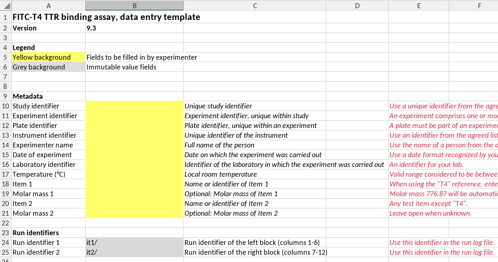
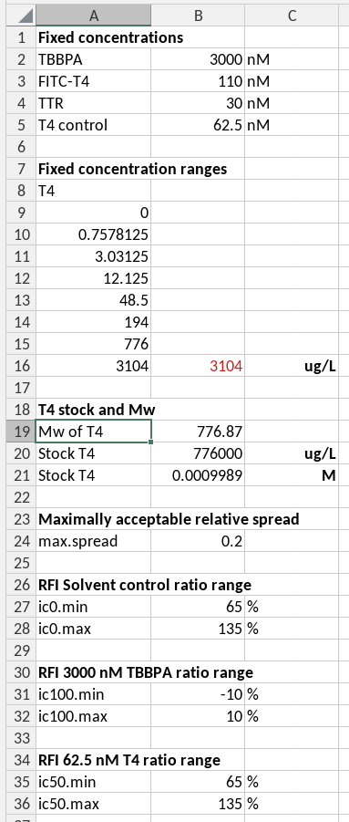
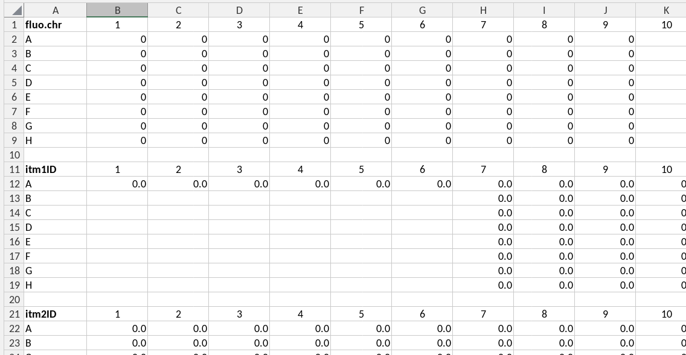

Constructing a spreadsheet template
To provide a link between the data structures of programming languages and those in a spreadsheet we consider the following four types of data structures in a template:
- keyvalue: a key-value pair, where the key is a variable name and the value is the value of that variable. The key and value are placed in horizontally adjacent cells (columns). The key, or its translated short name (see below) is to be used as the parameter name in the scripts and should conform to variable naming rules for the scripting language used. The key is found in the left-most cell of a cell range. The value can be a single value (one cell) or a vector of values (multiple cells).
- cells: occasionally it may be more convenient to read values from single cells and provide the keys (names) of the corresponding variables in the data guide. These data will be stored as key-value pairs, but in contrast to the keyvalue data type where a variable name is provided in the template the data guide must provide a variable name.
- table: tabular data where columns represent variables and rows represent items in which these variables are assessed. Column names are written in the first row and are used as variable names.
- platedata: data are registered in the same row-column format as the microplate in which the experiment was performed. The first row contains the variable name in its left-most cell, and is followed by (integer) column names. Every subsequent row contains the row name (in capital letters) followed by the values for each well. Both variable name and data are read by the script. The column and row names are ignored. Therefore, the first row and column in the range could also be empty, except for the variable name. Plate data are stored as tables in which, apart from the variables provided in the template two additional columns are added, namely row and column, corresponding to the row and column in a microplate.
Below is an example of the front page of a template (of the fitc-t4 TTR assay), illustrating a number of ideas and concepts that we discuss below.

First page of a template
A template must have a version number
Templates usually evolve over periods of usage and testing. To prevent misunderstandings a template version should have a unique template version number. We also needed them to check whether a data guide is compatible with the template version.
Version numbering rules. We follow the R-package
version rules. A version number has the structure
major.minor or major.minor.patch, where
major, minor and patch are each
integer values. A version consisting of only a major number is invalid,
but will be interpreted as having a minor version 0,
i.e. a version “2” will be interpreted as
“2.0”.
In practice this means that the format of the spreadsheet cell in which the version number is recorded should formally be text, and not general or number. However, in the Exceldataguide package we do provide functionality to interpret these fields as version numbers even if the cells in the template have general or number format.
Checking compatibilty of template versions and a guide version. We use template version numbers to check compatibility with a guide. In principle the same guide can be used for multiple versions of a template as long as the locations and names of variables indexed in the guide did not change in new template versions. This is the case when, for example, only explanatory texts or calculations or data validity checks have changed in the template. When checking version compatibility we assume that a guide is compatible with a consecutive range of template versions between a minimal and a maximal version number.
If you design the template carefully you can use the same data guide for several versions of the template. That is, as long as the location of the indexed data does not change, you can use the same data guide for different versions of the template. You can specify the compatible version of the templates in the data guide. The package will check compatibility. Clearly, you should use versioned data templates, and hence, a required field in a template is its version number.
A template must have a name
A template must have a name as a way for users to refer to it. Note that the example in the figure above doesn’t have a name. TODO: correct this example.
Protect all cells except those for data entry
Data entry cells have a distinct background color, here “marker yellow”. All other cells have protected status to prevent users from inadvertently changing them.
Built-in data entry checks
The validity of data entered by the users should be checked by validity checks, especially when misunderstandings are likely to happen. The validity checking capability by excel is limited. In cases where the data structure can not be properly described by a validity rule we add a comment next to the cell in which the data is entered.
A single source of parameters

The parameters as key-value pairs
Fixed parameters needed for calculations, for example for acceptance criteria or standard concentrations of (parameters that are usually described in a SOP) are best entered on a separate sheet, and referred to by absolute references or by named references in calculations. This mechanism prevents you from having to search through the entire template for formulas using these parameters if you need to change them, and it prevents you from accidentally using wrong values in calculations. In the case of the example we have a separate hidden sheet called _parameters for this purpose. This prevents users from accidentally modifying them, and keeps the template clean and organized. The information in this sheet can be indexed in the data guide, and will then be available to script-based analyses as well.
Use of hidden worksheets for data transfer

A hidden sheet with links to plate-formatted data
Missing values in spreadsheets
We strongly recommend using the NA() function to
represent missing values in your templates, especially in calculations.
Using NA() offers several benefits:
Advantages:
- Calculations automatically propagate
NA()values through subsequent formulas, avoiding errors and producing sensible results - Missing values are handled consistently and transparently
Challenges:
Missing values in Excel require special care in formulas. The main
issue is that different language settings of Excel use different string
representations for missing values (e.g., #N/A in
English, #NV in German). This creates problems:
- You cannot reliably detect missing values using string matching like
"<>#N/A", even though this approach is often suggested online - Conditional aggregation functions (
SUMIF,COUNTIF, etc.) do not work correctly withNA()values because they need a criterion like<>#N/Awhich detect the string#N/Ain cells
Solutions:
- Always use the
ISNA()function in your formulas to detectNA()values in cells - Always use
IFNA()to handleNA()values in aggregation formulas. For example:-
=SUM(IFNA(A1:A10, 0))— sums values, treatingNA()as 0 -
=PRODUCT(IFNA(A1:A10, 1))— multiplies values, treatingNA()as 1 -
=AVERAGE(IFNA(A1:A10, ""))— calculates the average, treatingNA()as “” -
=COUNT(IFNA(A1:A10, ""))— counts non-missing values, treatingNA()as “”
-
These formulas work correctly regardless of Excel’s language setting
and handle NA() values properly.
Flagged values (bad values)
Sometimes you have raw measurements that you want to exclude from analysis, but deleting them from the spreadsheet is not advisable. Flagging (rather than deleting) allows others—or your future self—to reconsider whether the measurement is truly “bad,” since this judgment can be subjective.
How to flag bad values: Add a marker symbol
(typically a star or asterisk) before or after the value: -
1000* or *1000 — marks a flagged
measurement
Documenting flagged values: In the same sheet, maintain a table documenting each flagged value with: - Cell address of the flagged measurement - Reason why it was flagged
This creates an audit trail and allows someone to revisit the decision later.
Detecting flagged values in calculations: You can
detect “starred” values in Excel using type-checking functions
(ISNUMBER(), ISTEXT(), etc.) and
convert them to NA(). For example:
=IF(NOT(ISNUMBER(A1)), NA(), A1) — returns
NA() if the cell is not a number (i.e., contains a starred
value like 1000*)
Visual indicators: Use conditional formatting to highlight flagged values with a distinct font color or cell background, making them visible at a glance.
In the excelDataGuide package: The package provides two utility functions to work with flagged values:
-
star_to_number()— Removes the star marker and converts the value back to a number -
has_star()— Detects which values are flagged (contain a star/asterisk). The output is a logical vector indicating which values are flagged. It can be used to create a column of flags next to the original values.
What else?
The keyvalue format will be mostly used for metadata and parameters. All keyvalue will be aggregated in a single named list called “keyvalue”.
The platedata format will be used for measured data and data concerning concentrations in the plate wells. All ranges will be aggregated in a single data frame with reported variables as column names, including the column names “row” and “col”, corresponding to the row and column names of the plate.